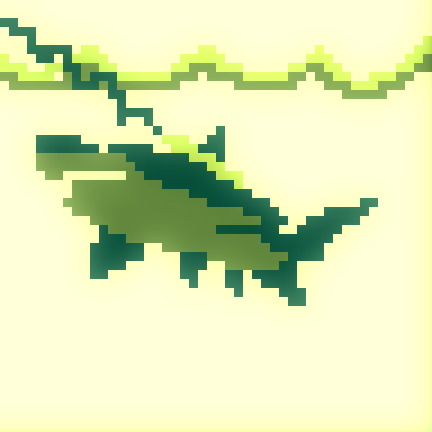
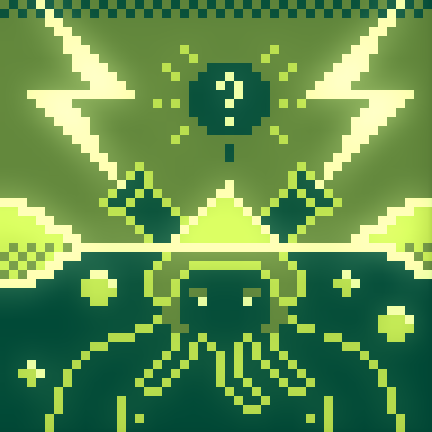
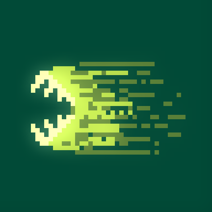
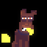
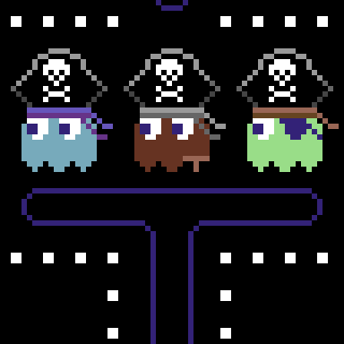
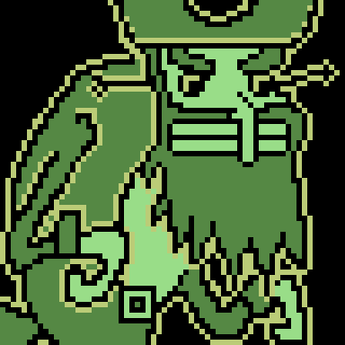
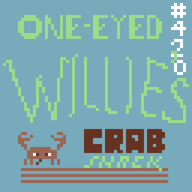
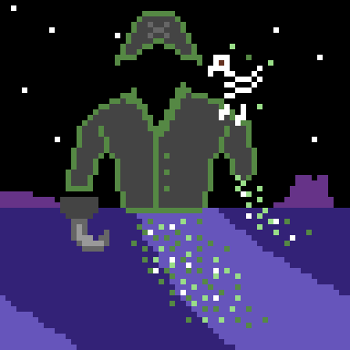
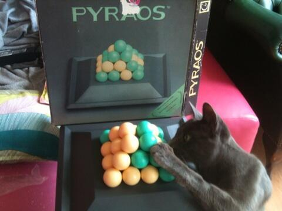

lazer shark by diet_toxin in 48x48 #pixels using the GameBoy palette. Visit http://paint.lo4d.net/ to draw your own!

lazer shark by shi in 48x48 #pixels using the GameBoy palette. Visit http://paint.lo4d.net/ to draw your own!

lazer shark by XIX in 48x48 #pixels using the GameBoy palette. Visit http://paint.lo4d.net/ to draw your own!

https://twitter.com/sgtruck/status/486236572745211904 @sgtruck @shi but more importantly, why you not drawing? http://paint.lo4d.net/
https://twitter.com/sgtruck/status/486236572745211904 @sgtruck @shi Is not technically borked, it's just never been finished...
lazer shark by great_pingas in 48x48 #pixels using the GameBoy palette. Visit http://paint.lo4d.net/ to draw yo...
lazer shark by Crustolio in 48x48 #pixels using the GameBoy palette. Visit http://paint.lo4d.net/ to draw your own!
cheese conqueror by DROSS in 32x32 #pixels using the Swanky32 palette. Visit http://paint.lo4d.net/ to draw you...

cheese conqueror by diet_toxin in 32x32 #pixels using the Swanky32 palette. Visit http://paint.lo4d.net/ to dra...
https://twitter.com/wetgenes/status/485941041489788928 @ausretrogamer @GuyFawkesRetro @aaronub4t @Gannon14 and 20 years later here's a little dpaint clone I'm building -> http://paint.lo4d.net/
https://twitter.com/ausretrogamer/status/485915748141789184 @ausretrogamer @GuyFawkesRetro @aaronub4t @Gannon14 Bottom right, Photogenics, I remember making that... :)
cheese conqueror by shi in 32x32 #pixels using the Swanky32 palette. Visit http://paint.lo4d.net/ to draw your own!
cheese conqueror by Crustolio in 32x32 #pixels using the Swanky32 palette. Visit http://paint.lo4d.net/ to draw...
pirate ghost by shi in 64x64 #pixels using the C64 palette. Visit http://paint.lo4d.net/ to draw your own!

pirate ghost by diet_toxin in 64x64 #pixels using the C64 palette. Visit http://paint.lo4d.net/ to draw your own!

pirate ghost by JetSet211 in 64x64 #pixels using the C64 palette. Visit http://paint.lo4d.net/ to draw your own!

pirate ghost by Crustolio in 64x64 #pixels using the C64 palette. Visit http://paint.lo4d.net/ to draw your own!

METAL HURLANT CHRONICLES is such delicious scify cheese! Why have I only just discovered it? https://www.youtube.com/watch?v=5Y4vvrf6Asw
Today's random board game find is also a cat toy. Pyraos from 1994 :)
